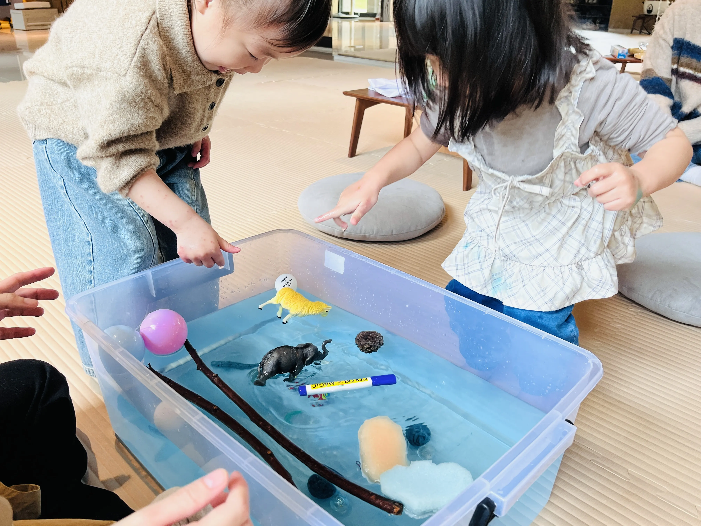
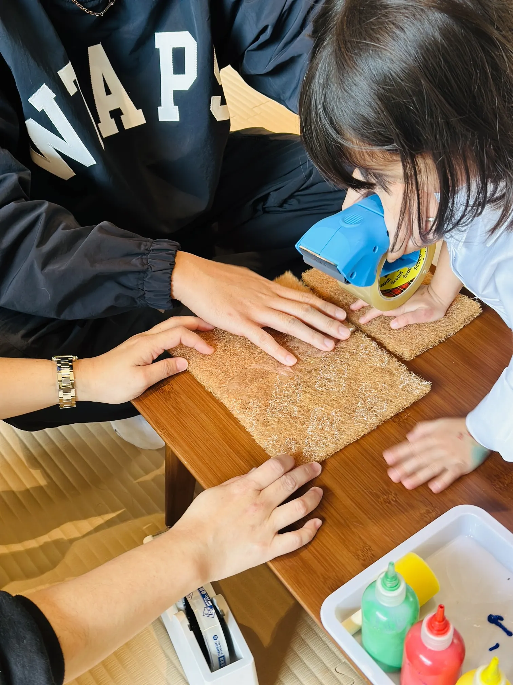

MURPHY LAB · STEAM IN EARLY CHILDHOOD #02
Thinking like a scientist
How children used predictions to stay with an investigation about floating, sinking and balance.

Children are often willing to make a guess before they know whether it is correct. I wanted to stay with that moment.
Before testing different objects, I asked, “What do you think will happen if we put this in water?” Some children thought heavier and larger objects would sink. Others thought lighter and smaller objects would float.
Then we tested the ideas. The children watched closely as the objects entered the water. Sometimes they were surprised. Sometimes they were pleased to be right. Either way, the result gave them something new to think about.

At that point, I was less interested in sorting the children’s predictions into right and wrong. I wanted to hear what they noticed after the test and whether the result changed their thinking.
A story gave the ideas somewhere to go
We read Who Sank the Boat? As each animal climbed aboard, the children predicted what might happen next. The story gave them another way to revisit size, weight and balance, this time through a situation they could imagine before it happened.
Then they made their own boats
Children used sponge pads, foam sticks, bamboo skewers and paper cup holders to design boats. Some boats tilted. Some slowly sank. One suggestion stayed with me: “Maybe we need a bigger base.”

They changed parts of the design and tried again. The water gave them information, and they decided what to do with it.
This is what I want children to experience when they investigate science. Their first idea is allowed to be incomplete. They can look closely, change their mind and keep going.